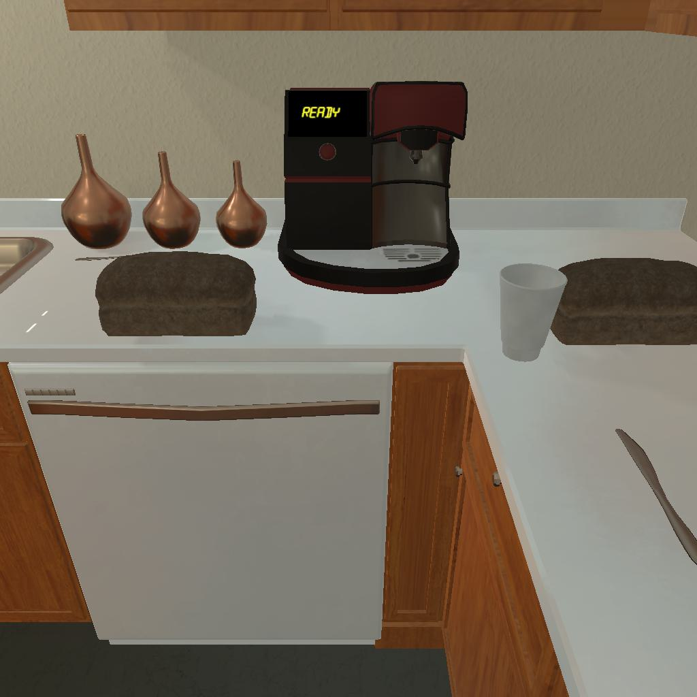

---------------------------------------------------------task: 17---------------------------------------------------------
--------------------------------------------------------------------------------------------------------------------------------------------------------------------
--------------------------------------------------------------------------------------------------------------------------------------------------------------------
Step:--------------------------------------------------------------------------3-------------------------------------------------------------------------------
----------------------------------------
VLM Prompt:
Image1:
Image2:
**Instruction**
1. Analyze the provided images to identify all visible household objects and compare the difference between images (e.h. whether the object is opened or not and taken on hand or not), focusing on those relevant to the task description "put a cool pan in stoveburner."
2. Use the analysis of images and the task hint "The agent must find an object of the desired type, pick it up, go to a fridge, cool the object with the fridge, then find the correct location to place it, and put it down there. The agent does not need to use the fridge button or open the fridge to cool the object, and the agent just needs to do action that is "cool the object with the fridge"." to answer the question: what is the most reasonable action in the choices for the task description "put a cool pan in stoveburner"?
3. Decide and write the answer using the template: The answer is: (i): , where i is the real number. If there is no desired object in images, search every place based on **Initial Observation** to find the object. And if no one is exactly correct, choose a similar answer.
**Initial Observation**
You are in the middle of a room. Looking quickly around you, you can see cabinet (1-14), countertop (1-2), microwave (1), drawer (1-5), sink (1), sinkbasin (1), coffeemachine (1), stoveburner (1-4), toaster (1), fridge (1), diningtable (1), garbagecan (1), safe (1)
**Answer Choices**
(1): go to cabinet 1
(2): go to cabinet 2
(3): go to cabinet 3
(4): go to cabinet 4
(5): go to cabinet 5
(6): go to microwave 1
(7): go to cabinet 6
(8): go to drawer 2
(9): go to drawer 3
(10): go to cabinet 7
(11): go to cabinet 8
(12): go to sink 1
(13): go to sinkbasin 1
(14): go to coffeemachine 1
(15): go to cabinet 9
(16): go to cabinet 10
(17): go to drawer 4
(18): go to cabinet 11
(19): go to stoveburner 1
(20): go to stoveburner 2
(21): go to stoveburner 3
(22): go to stoveburner 4
(23): go to cabinet 12
(24): go to toaster 1
(25): go to drawer 5
(26): go to countertop 2
(27): go to fridge 1
(28): go to cabinet 13
(29): go to cabinet 14
(30): go to diningtable 1
(31): go to garbagecan 1
(32): go to safe 1
(33): take bread 1 from countertop 1
(34): take bread 2 from countertop 1
(35): take cup 1 from countertop 1
(36): take butterknife 1 from countertop 1
(37): take fork 1 from countertop 1
(38): examine countertop 1
**Answer**
Let's think step by step by following the instructions.
----------------------------------------
----------------------------------------
Original Response:
Image Analysis:
- In Image 1, we see a microwave and a metal object (potentially a pan) on the countertop, with some objects like a butterknife and papers beside it.
- In Image 2, we see a coffee machine, three copper pots, two loaves of bread, a knife, and a cup on the countertop.
Comparison:
- The objects in both images are not picked up or opened.
- There is no pan visible on the stoveburner in either image.
- Based on the task description, we need to find a pan, cool it in the fridge, and then put it on the stoveburner.
Task Hint Analysis:
- The agent does not need to interact with the fridge buttons or open the fridge; it simply needs to perform the action of cooling the object with the fridge.
Conclusion:
- We need to find a pan first, which is not visible on the stoveburner in the provided images.
- Since the pan is a common object stored in cabinets or drawers near the stove, the best action would be to search the nearby cabinets.
The answer is: (10): go to cabinet 7
----------------------------------------
----------------------------------------
>>> Refine Original VLM Response and Get Pure Action: go to cabinet 7
----------------------------------------
-----------------------------------------------------------------
Running time: 12.515114307403564 seconds
Total Money: 8.055590000000004
-----------------------------------------------------------------
-----------------------------------------------------------------
Text Observation:You arrive at loc 11. The cabinet 7 is closed.
-----------------------------------------------------------------
UNSUCCEED